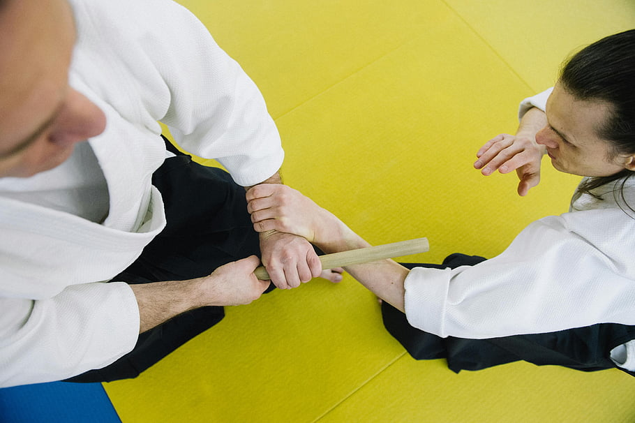
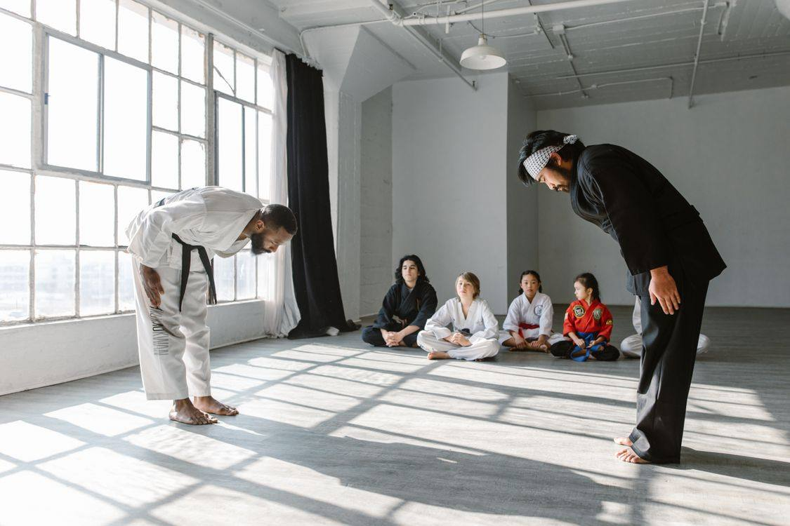
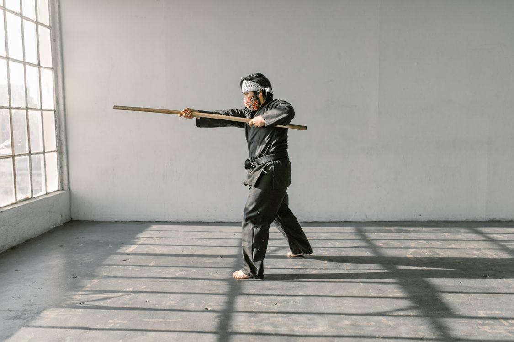

Grace Wu Kung Fu School
A downtown Wichita martial arts school teaching northern Shaolin kung fu, Tai Chi, and Baguazhang since 1986.

About
Grace Wu Kung Fu School is a martial arts school at 122 N St Francis in downtown Wichita, founded in 1986 by Master Grace Wu-Monnat. Wu-Monnat won the 2024 Tiger Claw Elite Lifetime Achievement Award, and her students range from teens to octogenarians.
Services
Northern Shaolin kung fu
Northern Shaolin kung fu with kicks, blocks, and punches that build strength, flexibility, and speed.
Tai Chi
Tai Chi taught in a slow, meditative manner that can improve balance and strength.
Baguazhang
Baguazhang, a discipline built around circular gliding movement.
Weapons classes
Weapons classes teaching swords, spears, and staffs in kung fu and tai chi styles.
Children's kung fu
Children's kung fu classes for younger students.
Gallery


All gallery photos are stock photos, labeled as such. They show the kind of work and setting described on this page, not this business.
Visit
Contact
Call +1 316-264-9640 Email info@gracewu.com
Grace Wu Kung Fu School serves Wichita, KS. Questions? Call +1 316-264-9640.